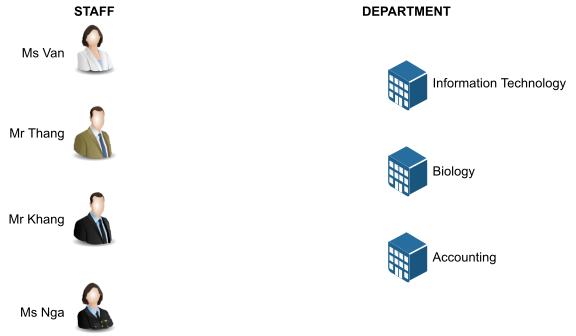
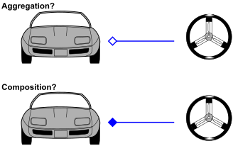
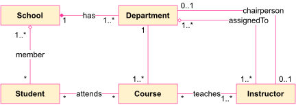

5 RELATIONSHIP
The Need for Relationships
- All systems encompass many classes and objects
- Objects contribute to the behavior of a system by collaborating with one another
- Collaboration is accomplished through relationships
Introduction
In object-oriented modeling, there are three kinds of relationships that are most important: dependencies, generalizations, and associations.
- Dependencies are using relationships. For example, pipes depend on the water heater to heat the water they carry.
- Associations are structural relationships among instances. For example, rooms consist of walls and other things.
- Generalizations connect generalized classes to more-specialized ones in what is known as subclass/superclass or child/parent relationships. For example, a picture window is a kind of window with very large, fixed panes.
5.1 Generalization
Generalization
- A generalization is a relationship between a general kind of thing (called the superclass or parent) and a more specific kind of thing (called the subclass or child).
- Generalization is sometimes called an “is-a-kind-of” relationship: one thing (like the class
BayWindow) is-a-kind-of a more general thing (for example, the classWindow)

5.2 Association
Association
An association is a structural connection between classes \(\to\) This implies that there is a link between objects in the associated classes
Associations are represented on class diagrams by a (solid) line connecting the associated classes
Navigation across an association can be
- bidirectional (default)
- uni-directional
Name: An association can have a name, and you use that name to describe the nature of the relationship.
Role: When a class participates in an association, it has a specific role that it plays in that relationship.
Multiplicity: In many modeling situations, it’s important for you to state how many objects may be connected across an instance of an association.
Consider the association of member

- Association relationship between class A and class B
- there is at least one attribute of class B in class A and/or
- there is at least one attribute of class A in class B

Aggregation
- Aggregation is a specialized form of association in which a whole is related to its part(s)
- Aggregation is known as a “part-of” or containment relationship
- An aggregation is represented as an association with a diamond next to the class denoting the aggregate (whole)

Association or Aggregation?
- If two objects are tightly bound by a whole-part relationship \(\to\) The relationship is an aggregation
- If two objects are usually considered as independent, even though they are often linked \(\to\) The relationship is an association

- An aggregation hierarchy for a car.

- Associations as a separate service.
Reflexive Associations
- In a reflexive association, objects in the same class are related
- Indicates that multiple objects in the same class collaborate together in some way

Reflexive Aggregates
- Aggregates can also be reflexive
- Classic bill of materials type problem \(\to\)This indicates a recursive relationship

Composition
- A form of aggregation with strong ownership and coincident lifetimes
- The parts cannot survive the whole/aggregate

Aggregation or Composition?

5.3 Dependency
Dependency
- A dependency is a relationship that states that one thing (for example, class
FilmClip) uses the information and services of another thing (for example, classChannel), but not necessarily the reverse.

Dependencies vs. Associations
- Associations are structural relationships
- Dependencies are non-structural relationships
- In order for objects to “know each other” they must be visible
- Local variable reference
- Parameter reference
- Global reference
- Field reference
Permanent relationships — Association (field visibility)
- Relationships are context-dependent
Transient relationships — Dependency
- A context-independent relationship
- Multiple objects share the same instance
- Pass instance as a parameter (parameter visibility)
- Make instance a managed global (global visibility)
- Multiple objects don’t share the same instance (local visibility)
How long does it take to create/destroy?
- Expensive? Use field, parameter, or global visibility
- Strive for the lightest relationships possible
5.4 Common Modeling Techniques
Modeling Simple Dependencies
- A common kind of dependency relationship is the connection between a class that uses another class as a parameter to an operation.
- To model this using relationship,
- Create a dependency pointing from the class with the operation to the class used as a parameter in the operation.

Modeling Inheritance
To model inheritance relationships, - Given a set of classes, look for responsibilities, attributes, and operations that are common to two or more classes. - Elevate these common responsibilities, attributes, and operations to a more general class. If necessary, create a new class to which you can assign these elements (but be careful about introducing too many levels). - Specify that the more-specific classes inherit from the more-general class by placing a generalization relationship that is drawn from each specialized class to its more-general parent.

Modeling Structural Relationships
To model structural relationships,
For each pair of classes, if you need to navigate from objects of one to objects of another, specify an association between the two. This is a data-driven view of associations.
For each pair of classes, if objects of one class need to interact with objects of the other class other than as local variables in a procedure or parameters to an operation, specify an association between the two. This is more of a behavior-driven view of associations.
For each of these associations, specify a multiplicity (especially when the multiplicity is not
*, which is the default), as well as role names (especially if they help to explain the model).If one of the classes in an association is structurally or organizationally a whole compared with the classes at the other end that look like parts, mark this as an aggregation by adorning the association at the end near the whole with a diamond.
Structural relationships of a set of classes drawn from an information system for a school.

Modeling Simple Collaborations
- OO Principle: Every operation is the responsibility of a single class.
- However, no class stands alone. Each works in collaboration with others to carry out some semantics greater than each individual.
To model a collaboration
- Identify the mechanism you’d like to model. A mechanism represents some function or behavior of the part of the system you are modeling that results from the interaction of a society of classes, interfaces, and other things.
- For each mechanism, identify the classes, interfaces, and other collaborations that participate in this collaboration. Identify the relationships among these things as well.
- Use scenarios to walk through these things. Along the way, you’ll discover parts of your model that were missing and parts that were just plain semantically wrong.
- Be sure to populate these elements with their contents. For classes, start with getting a good balance of responsibilities. Then, over time, turn these into concrete attributes and operations.
Example